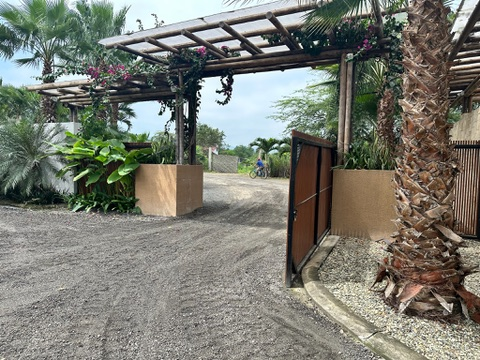

5 razones para invertir en casas frente al mar en Ayampe Ecuador
Ayampe, un paraíso escondido en la costa de Ecuador, se está convirtiendo rápidamente en el destino soñado para quienes buscan invertir en bienes raíces frente al mar. Si estás considerando una propiedad en la playa, aquí te presentamos 5 razones de peso para elegir Ayampe.
1. Ubicación Privilegiada y Crecimiento Sostenible
Ayampe se encuentra en la famosa Ruta del Spondylus, entre los populares destinos de Montañita y Puerto López. Este pequeño pueblo conserva su encanto natural y una atmósfera relajada, mientras experimenta un crecimiento consciente que garantiza la preservación de su entorno.
La proximidad a aeropuertos internacionales como el de Manta (1.5 horas) facilita el acceso, haciendo de Ayampe un lugar ideal tanto para residentes permanentes como para turistas.
2. Alta Plusvalía y Retorno de Inversión
El mercado inmobiliario en Ayampe está en auge. La demanda de propiedades frente al mar está creciendo exponencialmente, impulsada por un turismo en aumento y el deseo de vivir en un entorno natural y tranquilo. Esto se traduce en una alta plusvalía proyectada y un excelente potencial de retorno de inversión a través de alquileres vacacionales.
Invertir ahora significa asegurar un activo que no solo te brindará un estilo de vida envidiable, sino también una significativa ganancia a largo plazo.
3. Calidad de Vida Inigualable
Vivir en Ayampe es adoptar un estilo de vida saludable y conectado con la naturaleza. Despierta con el sonido de las olas, disfruta de largas caminatas por la playa, practica surf en sus famosas rompientes o explora la exuberante selva circundante.
La comunidad local es amigable y acogedora, con una creciente oferta de restaurantes, cafés y actividades que complementan la tranquilidad del lugar. Es el equilibrio perfecto entre aventura y relajación.
4. Variedad de Propiedades Exclusivas
En Ayampe, puedes encontrar una diversidad de propiedades frente al mar que se adaptan a diferentes gustos y presupuestos, desde villas de lujo hasta condominios modernos con todas las comodidades. Casas Ayampe, por ejemplo, ofrece proyectos como Sandpiper, con diseños innovadores y acabados de primera calidad, asegurando una experiencia de vida excepcional.
Estas propiedades están diseñadas para maximizar las vistas al océano y ofrecer espacios amplios y luminosos, integrándose perfectamente con el entorno natural.
5. Un Ecosistema Natural Protegido
Ayampe se enorgullece de su compromiso con la sostenibilidad y la conservación del medio ambiente. Es parte de un ecosistema que alberga una rica biodiversidad, incluyendo el Parque Nacional Machalilla, conocido por sus playas vírgenes como Los Frailes y su vida silvestre marina.
Al invertir aquí, no solo adquieres una propiedad, sino que también contribuyes a la preservación de un tesoro natural, asegurando que las futuras generaciones puedan seguir disfrutando de su belleza.
En resumen, Ayampe ofrece una combinación única de belleza natural, potencial de inversión y calidad de vida. Es el lugar perfecto para construir el hogar de tus sueños frente al mar o realizar una inversión inteligente en un destino en crecimiento.